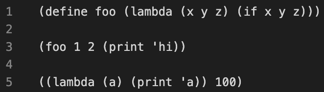

Lab 11: Scheme
Due by 11:59pm on Wednesday, April 12.
Starter Files
Download lab11.zip. Inside the archive, you will find starter files for the questions in this lab, along with a copy of the Ok autograder.
Topics
Consult this section if you need a refresher on the material for this lab. It's okay to skip directly to the questions and refer back here should you get stuck.
Scheme
Scheme is a famous functional programming language from the 1970s. It is a
dialect of Lisp (which stands for LISt Processing). The first observation most
people make is the unique syntax, which uses a prefix notation and (often many)
nested parentheses (see http://xkcd.com/297/). Scheme
features first-class functions and optimized tail-recursion, which were
relatively new features at the time.

Our course uses a custom version of Scheme (which you will build for Project 4) included in the starter ZIP archive. To start the interpreter, type
python3 scheme. To run a Scheme program interactively, typepython3 scheme -i <file.scm>. To exit the Scheme interpreter, type(exit).
Recommended VSCode Extensions
If you use VSCode as your text editor, we have found these extensions to be quite helpful for Scheme :)
Before:
After:

Extensions:


You may find it useful to try code.cs61a.org/scheme when working through problems, as it can draw environment and box-and-pointer diagrams and it lets you walk your code step-by-step (similar to Python Tutor). Don't forget to submit your code by submitting to the appropriate Gradescope assignment though!
Scheme Editor
You can write your code by either opening the designated .scm file in your text editor, or by typing directly in the Scheme Editor, which can also be useful for debugging. To run this editor, run python3 editor. This should pop up a window in your browser; if it does not, please navigate to localhost:31415 while python3 editor is still running and you should see it. If you choose to code directly in the Scheme Editor, don't forget to save your work before running Ok tests and before closing the editor. To stop running the editor and return to the command line, type Ctrl-C.
Make sure to run python3 ok in a separate tab or window so that the editor keeps running.
If you find that your code works in the online editor but not in your own interpreter, it's possible you have a bug in your code from an earlier part that you'll have to track down. Every once in a while there's a bug that our tests don't catch, and if you find one you should let us know!
Expressions
Primitive Expressions
Just like in Python, atomic, or primitive, expressions in Scheme take a single step to evaluate. These include numbers, booleans, symbols.
scm> 1234 ; integer
1234
scm> 123.4 ; real number
123.4Symbols
Out of these, the symbol type is the only one we didn't encounter in Python. A symbol acts a lot like a Python name, but not exactly. Specifically, a symbol in Scheme is also a type of value. On the other hand, in Python, names only serve as expressions; a Python expression can never evaluate to a name.
scm> quotient ; A name bound to a built-in procedure
#[quotient]
scm> 'quotient ; An expression that evaluates to a symbol
quotient
scm> 'hello-world!
hello-world!Booleans
In Scheme, all values except the special boolean value #f are interpreted
as true values (unlike Python, where there are some false-y values like 0).
Our particular version of the Scheme interpreter allows you to write True and
False in place of #t and #f. This is not standard.
scm> #t
#t
scm> #f
#fCall Expressions
Like Python, the operator in a Scheme call expression comes before all the operands. Unlike Python, the operator is included within the parentheses and the operands are separated by spaces rather than with commas. However, evaluation of a Scheme call expression follows the exact same rules as in Python:
- Evaluate the operator. It should evaluate to a procedure.
- Evaluate the operands, left to right.
- Apply the procedure to the evaluated operands.
Here are some examples using built-in procedures:
scm> (+ 1 2)
3
scm> (- 10 (/ 6 2))
7
scm> (modulo 35 4)
3
scm> (even? (quotient 45 2))
#tSpecial Forms
The operator of a special form expression is a special form. What makes a special form "special" is that they do not follow the three rules of evaluation stated in the previous section. Instead, each special form follows its own special rules for execution, such as short-circuiting before evaluating all the operands.
Some examples of special forms that we'll study today are the if, cond,
define, and lambda forms. Read their corresponding sections below to find
out what their rules of evaluation are!
Control Structures
if Expressions
The if special form allows us to evaluate one of two expressions based on a
predicate. It takes in two required arguments and an optional third argument:
(if <predicate> <if-true> [if-false])The first operand is what's known as a predicate expression in Scheme, an
expression whose value is interpreted as either #t or #f.
The rules for evaluating an if special form expression are as follows:
- Evaluate
<predicate>. - If
<predicate>evaluates to a truth-y value, evaluate and return the value if the expression<if-true>. Otherwise, evaluate and return the value of[if-false]if it is provided.
Can you see why this expression is a special form? Compare the rules between a
regular call expression and an if expression. What is the difference?
Step 2 of evaluating call expressions requires evaluating all of the operands in order. However, an
ifexpression will only evaluate two of its operands, the conditional expression and either<true-result>or<false-result>. Because we don't evaluate all the operands in anifexpression, it is a special form.
Let's compare a Scheme if expression with a Python if statement:
| Scheme | Python |
|---|---|
|
|
Although the code may look the same, what happens when each block of code is
evaluated is actually very different. Specifically, the Scheme expression,
given that it is an expression, evaluates to some value. However, the Python
if statement simply directs the flow of the program.
Another difference between the two is that it's possible to add more lines of
code into the suites of the Python if statement, while a Scheme if
expression expects just a single expression for each of the true result and the
false result.
One final difference is that in Scheme, you cannot write elif cases. If you
want to have multiple cases using the if expression, you would need multiple
branched if expressions:
| Scheme | Python |
|---|---|
|
|
cond Expressions
Using nested if expressions doesn't seem like a very practical way to take
care of multiple cases. Instead, we can use the cond special form, a general
conditional expression similar to a multi-clause if/elif/else conditional
expression in Python. cond takes in an arbitrary number of arguments known as
clauses. A clause is written as a list containing two expressions: (<p>
<e>).
(cond
(<p1> <e1>)
(<p2> <e2>)
...
(<pn> <en>)
[(else <else-expression>)])The first expression in each clause is a predicate. The second expression in
the clause is the return expression corresponding to its predicate. The
optional else clause has no predicate.
The rules of evaluation are as follows:
- Evaluate the predicates
<p1>,<p2>, ...,<pn>in order until you reach one that evaluates to a truth-y value. - If you reach a predicate that evaluates to a truth-y value, evaluate and return the corresponding expression in the clause.
- If none of the predicates are truth-y and there is an
elseclause, evaluate and return<else-expression>.
As you can see, cond is a special form because it does not evaluate its
operands in their entirety; the predicates are evaluated separately from their
corresponding return expression. In addition, the expression short circuits
upon reaching the first predicate that evaluates to a truth-y value, leaving
the remaining predicates unevaluated.
The following code is roughly equivalent (see the explanation in the if expression section):
| Scheme | Python |
|---|---|
|
|
Defining Names
The special form define is used to define variables and functions in Scheme.
There are two versions of the define special form. To define variables, we
use the define form with the following syntax:
(define <name> <expression>)The rules to evaluate this expression are
- Evaluate the
<expression>. - Bind its value to the
<name>in the current frame. - Return
<name>.
The second version of define is used to define procedures:
(define (<name> <param1> <param2> ...) <body> )To evaluate this expression:
- Create a lambda procedure with the given parameters and
<body>. - Bind the procedure to the
<name>in the current frame. - Return
<name>.
The following two expressions are equivalent:
scm> (define foo (lambda (x y) (+ x y)))
foo
scm> (define (foo x y) (+ x y))
foodefine is a special form because its operands are not evaluated at all! For
example, <body> is not evaluated when a procedure is defined, but rather when
it is called. <name> and the parameter names are all names that should not be
evaluated when executing this define expression.
Lambda Functions
All Scheme procedures are lambda procedures. To create a lambda procedure, we
can use the lambda special form:
(lambda (<param1> <param2> ...) <body>)This expression will create and return a function with the given parameters and
body, but it will not alter the current environment. This is very similar to a
lambda expression in Python!
scm> (lambda (x y) (+ x y)) ; Returns a lambda function, but doesn't assign it to a name
(lambda (x y) (+ x y))
scm> ((lambda (x y) (+ x y)) 3 4) ; Create and call a lambda function in one line
7Let's look at the equivalent expressions in Python:
>>> lambda x, y: x + y
>>> (lambda x, y: x + y)(3, 4)
7A procedure may take in any number of parameters. The <body> may contain
multiple expressions. There is not an equivalent version of a Python return
statement in Scheme. The function will simply return the value of the last
expression in the body.
Lists
As you read through this section, it may be difficult to understand the differences between the various representations of Scheme containers. We recommend that you use our online Scheme interpreter to see the box-and-pointer diagrams of pairs and lists that you're having a hard time visualizing! (Use the command
(autodraw)to toggle the automatic drawing of diagrams.)
Lists
Scheme lists are very similar to the linked lists we've been working with in
Python. Just like how a linked list is constructed of a series of Link
objects, a Scheme list is constructed with a series of pairs, which are created
with the constructor cons.
Scheme lists require that the cdr is either another list or nil, an empty list.
A list is displayed in the interpreter as a sequence of values (similar to the
__str__ representation of a Link object). For example,
scm> (cons 1 (cons 2 (cons 3 nil)))
(1 2 3)Here, we've ensured that the second argument of each cons expression is
another cons expression or nil.

We can retrieve values from our list with the car and cdr procedures, which
now work similarly to the Python Link's first and rest attributes.
(Curious about where these weird names come from? Check out their
etymology.)
scm> (define a (cons 1 (cons 2 (cons 3 nil)))) ; Assign the list to the name a
a
scm> a
(1 2 3)
scm> (car a)
1
scm> (cdr a)
(2 3)
scm> (car (cdr (cdr a)))
3If you do not pass in a pair or nil as the second argument to cons, it will
error:
scm> (cons 1 2)
Errorlist Procedure
There are a few other ways to create lists. The list procedure takes in an
arbitrary number of arguments and constructs a list with the values of these
arguments:
scm> (list 1 2 3)
(1 2 3)
scm> (list 1 (list 2 3) 4)
(1 (2 3) 4)
scm> (list (cons 1 (cons 2 nil)) 3 4)
((1 2) 3 4)Note that all of the operands in this expression are evaluated before being put into the resulting list.
Quote Form
We can also use the quote form to create a list, which will construct the exact
list that is given. Unlike with the list procedure, the argument to ' is
not evaluated.
scm> '(1 2 3)
(1 2 3)
scm> '(cons 1 2) ; Argument to quote is not evaluated
(cons 1 2)
scm> '(1 (2 3 4))
(1 (2 3 4))Built-In Procedures for Lists
There are a few other built-in procedures in Scheme that are used for lists. Try them out in the interpreter!
scm> (null? nil) ; Checks if a value is the empty list
True
scm> (append '(1 2 3) '(4 5 6)) ; Concatenates two lists
(1 2 3 4 5 6)
scm> (length '(1 2 3 4 5)) ; Returns the number of elements in a list
5Required Questions
Getting Started Videos
These videos may provide some helpful direction for tackling the coding problems on this assignment.
To see these videos, you should be logged into your berkeley.edu email.
What Would Scheme Display?
Q1: WWSD: Combinations
Let's familiarize ourselves with some built-in Scheme procedures and special forms!
Use Ok to unlock the following "What would Scheme print?" questions:
python3 ok -q combinations -u
scm> (- 10 4)
scm> (* 7 6)
scm> (+ 1 2 3 4)
scm> (/ 8 2 2)
scm> (quotient 29 5)
scm> (modulo 29 5)scm> (= 1 3) ; Scheme uses '=' instead of '==' for comparison
scm> (< 1 3)
scm> (or 1 #t) ; or special form short circuits
scm> (and #t #f (/ 1 0))
scm> (not #t)scm> (define x 3)
scm> x
scm> (define y (+ x 4))
scm> y
scm> (define x (lambda (y) (* y 2)))
scm> (x y)scm> (if (not (print 1)) (print 2) (print 3))
scm> (* (if (> 3 2) 1 2) (+ 4 5))
scm> (define foo (lambda (x y z) (if x y z)))
scm> (foo 1 2 (print 'hi))
scm> ((lambda (a) (print 'a)) 100)Coding Questions
Q2: Over or Under
Define a procedure over-or-under which takes in a number num1 and a number num2
and returns the following:
- -1 if
num1is less thannum2 - 0 if
num1is equal tonum2 - 1 if
num1is greater thannum2
Challenge: Implement this in 2 different ways using
ifandcond!
(define (over-or-under num1 num2)
'YOUR-CODE-HERE
)Use Ok to test your code:
python3 ok -q over_or_underQ3: Make Adder
Write the procedure make-adder which takes in an initial number,
num, and then returns a procedure. This returned procedure takes in a
number inc and returns the result of num + inc.
Hint: To return a procedure, you can either return a
lambdaexpression ordefineanother nested procedure. Remember that Scheme will automatically return the last clause in your procedure.You can find documentation on the syntax of
lambdaexpressions in the 61A scheme specification!
(define (make-adder num)
'YOUR-CODE-HERE
)Use Ok to test your code:
python3 ok -q make_adderQ4: Compose
Write the procedure composed, which takes in procedures f and g
and outputs a new procedure. This new procedure takes in a number x
and outputs the result of calling f on g of x.
(define (composed f g)
'YOUR-CODE-HERE
)Use Ok to test your code:
python3 ok -q composedQ5: Repeat
Write the procedure repeat, which takes in a procedure f and a number n, and outputs a new procedure. This new procedure takes in a number x and outputs the result of applying f to x a total of n times. For example:
scm> (define (square x) (* x x))
square
scm> ((repeat square 2) 5) ; (square (square 5))
625
scm> ((repeat square 3) 3) ; (square (square (square 3)))
6561
scm> ((repeat square 1) 7) ; (square 7)
49Hint: The
composedfunction you wrote in the previous problem might be useful.
(define (repeat f n)
'YOUR-CODE-HERE
)Use Ok to test your code:
python3 ok -q repeatSubmit
Make sure to submit this assignment by uploading any files you've edited to the appropriate Gradescope assignment. For a refresher on how to do this, refer to Lab 00.
Optional Questions
Q6: Greatest Common Divisor
The GCD is the the greatest common divisor of two numbers.
Write the procedure gcd, which computes the GCD of numbers a and b.
Recall that Euclid's Algorithm tells us that the GCD of two values is either of
the following:
- the smaller value if it evenly divides the larger value, or
- the greatest common divisor of the smaller value and the remainder of the larger value divided by the smaller value
In other words, if a is greater than b and a is not divisible by
b, then
gcd(a, b) = gcd(b, a % b)You may find the provided procedures
minandmaxhelpful. You can also use the built-inmoduloandzero?procedures.scm> (modulo 10 4) 2 scm> (zero? (- 3 3)) #t scm> (zero? 3) #f
(define (max a b) (if (> a b) a b))
(define (min a b) (if (> a b) b a))
(define (gcd a b)
'YOUR-CODE-HERE
)Use Ok to test your code:
python3 ok -q gcd